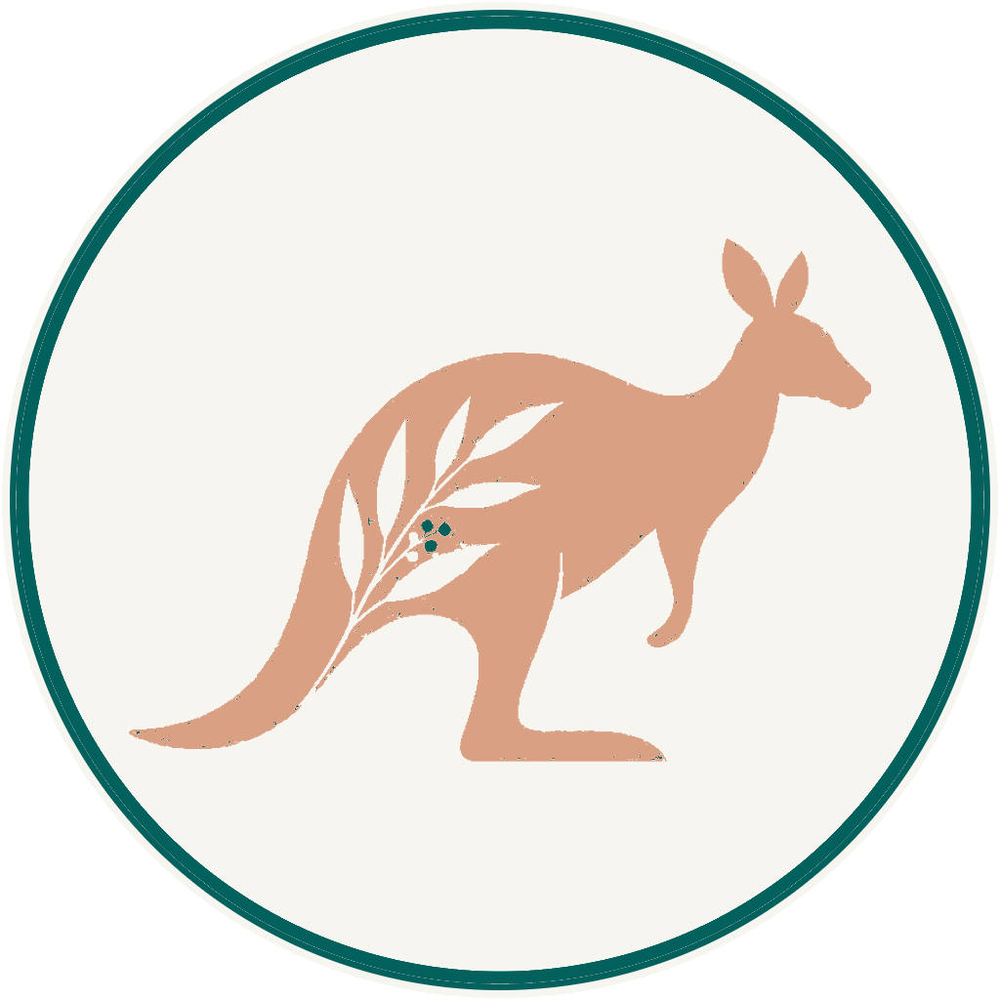

Working as a GP in Australia or New Zealand?
Similar on paper, different in practice
On paper the two look remarkably similar. In practice, general practice works quite differently in each, and that difference is where the decision actually lives.
Neither is universally the better choice
For GPs considering a move overseas, Australia and New Zealand often end up on the same shortlist. Both offer English-speaking healthcare systems, strong demand for experienced GPs, attractive lifestyles and the chance to build a long-term life outside the UK, Ireland, South Africa or elsewhere.
In practice, though, working as a GP in Australia and working as a GP in New Zealand can feel quite different. Australia generally offers greater earning potential, a much larger choice of locations and a more commercially driven model of general practice. New Zealand offers a smaller, more connected healthcare environment where continuity of care and community medicine remain particularly important.
It depends on what you want from your career, and from life outside work.
At a glance
The honest headline on each, before the detail.
 Australia | New Zealand | |
|---|---|---|
| Earning potential | Generally higher | Generally lower than Australia |
| Employment model | Frequently contractor, on a percentage of billings | More salaried and employed opportunities alongside contractor models |
| Healthcare funding | Medicare, with bulk, mixed and private billing | Capitation-based primary care funding plus patient co-payments |
| Choice of locations | Huge geographical choice | Smaller market, but opportunities throughout the country |
| Registration | Can be more complex, depending on your qualifications and pathway | Often comparatively straightforward for eligible experienced GPs, though individual assessment may still be required |
| Pace of life | Varies enormously by location | Generally smaller-scale and less densely populated |
| Best suited to | GPs prioritising earnings, choice and flexibility | GPs prioritising community, lifestyle and continuity of care |
How general practice works
The most important difference between the two countries is the way primary care is organised and funded. Everything else, pay, workload, how your week feels, follows from it.
Medicare and fee-for-service
Australian general practice operates largely around Medicare and fee-for-service billing. Depending on the practice, patients may be bulk billed, privately billed or treated under a mixed-billing model. GPs frequently work as independent contractors and receive an agreed percentage of the revenue they generate.
That can create significant earning potential, particularly for established GPs with full appointment books. It also means you need to understand an offer beyond the headline percentage.
- A practice offering 70% of billings is not automatically better than one offering 65%.
- Patient numbers, consultation fees, billing policy, opening hours, administrative support and the amount of non-clinical work all affect what you actually earn.
- The RACGP’s own billing examples show how much a GP’s eventual income can vary by billing model, patient volume and the percentage retained.
For GPs accustomed to a fixed NHS salary, this model can take some adjustment.
Capitation, and the option of a salary
Primary care is funded through a combination of government capitation funding and patient fees. There are salaried GP positions as well as contractor arrangements, and the precise model varies between practices.
For an overseas GP, a salaried position can offer something particularly valuable in the first year: predictability. You know what you are earning, and can concentrate on adapting to a new healthcare system rather than immediately thinking about billings and patient throughput.
- New Zealand general practice can have a particularly strong community focus.
- In smaller cities and regional communities, GPs may look after several generations of the same family.
- For doctors who value continuity of care, that can be one of the country’s biggest attractions.
Australia’s model rewards volume and gives you commercial upside, and asks you to carry more of the risk. New Zealand’s is more likely to hand you a known number and a known week. Which is better depends entirely on whether you want to run a small business inside your clinical career, or practise medicine.
What can you earn?
This is one area where Australia often wins on paper. It is also the area where the headline figure misleads most reliably.
Strong, but variable
Experienced Australian GPs working under percentage-of-billings arrangements can achieve very strong incomes, although earnings vary enormously according to location, hours, billing model and patient demand.
It is essential to distinguish billings from personal income. A GP generating A$500,000 in annual billings does not personally receive A$500,000.
More modest, more predictable
New Zealand GP remuneration is generally more modest by comparison, and more often expressed as a salary you can plan around rather than a share of what you bring in.
For many GPs arriving from another system, that predictability in the first year or two is worth more than the difference on paper.
Salary should never be compared in isolation, and never as billings against salary.
Housing, commuting, childcare, working hours, annual leave, whether you are employed or self-employed, professional expenses and the cost of living in your chosen city all matter. A GP earning substantially more in Sydney may not feel substantially better off than a GP living in a smaller New Zealand city.
If income is your overriding priority, Australia will often have the advantage. If your priority is the overall package of work, lifestyle and community, the comparison becomes much closer than the headline numbers suggest.
Registration: don’t assume the process is the same
Registration is the area where individual circumstances matter most. Two GPs with apparently similar CVs can have quite different registration journeys.
Several pathways, one national scheme
Australia has several pathways for internationally qualified doctors, including the Competent Authority, Specialist and Expedited Specialist pathways. The appropriate route depends on your qualifications, specialist status and previous training and practice.
The introduction of the Expedited Specialist pathway has changed the landscape for some internationally trained specialists, including eligible GPs.
Assessment against the NZ standard
New Zealand has its own pathways through the Medical Council of New Zealand. Internationally trained GPs seeking vocational recognition may have their postgraduate qualifications, training and experience assessed against the New Zealand standard.
Some doctors initially practise within a provisional vocational scope and may need to complete supervision or other requirements before obtaining full vocational registration.
Before deciding between Australia and New Zealand, establish the likely registration pathway in both countries. It can save considerable time and money later, and occasionally it settles the decision on its own.
Where could you live?
This is where the decision becomes much more personal — and where the word “regional” means something quite different from what most people arriving expect.
An extraordinary range of choices
You could live in a major city such as Melbourne, Brisbane, Perth or Adelaide, move to a coastal community, or work in a regional centre where GP demand can be particularly strong.
Regional Australia should not be read as remote Australia. Cities such as Geelong, Newcastle, Wollongong, the Gold Coast and many regional centres offer substantial populations, schools, hospitals, restaurants and established communities, while providing easier access to beaches and outdoor space.
- For some internationally trained doctors, where you can initially work may be affected by Medicare and workforce distribution rules.
- Check this as part of your individual pathway, not after accepting a job.
Fewer places, remarkable variety
New Zealand offers fewer locations because it is a much smaller country, but the geographical variety is remarkable. Auckland provides the largest urban environment and the most internationally diverse population. Wellington combines a compact capital with coast and surrounding countryside. Christchurch offers access to the South Island and a very different pace from Auckland.
Then there are places such as Tauranga, Hamilton, Nelson, Hawke’s Bay, Palmerston North, Queenstown and numerous smaller communities.
- The distinction between “city” and “regional” feels very different from the UK.
- Living outside Auckland does not mean sacrificing good schools, restaurants or amenities. In many cases it means a ten-minute commute instead of an hour-long one.
What about workload?
Neither country should be presented as an escape from the pressures facing primary care internationally. GP shortages exist in both.
There will still be busy clinics, complex patients, administrative work and days when the appointment book feels relentless. The difference is often in the environment around the work.
In Australia, the billing structure can influence consultation patterns and workload. Some doctors enjoy the autonomy and earning potential this provides; others prefer a more predictable employed model. In New Zealand, workforce shortages can create pressure of their own, particularly in communities with limited GP capacity.
So ask prospective employers specific questions: appointment lengths, patients per session, protected administration time, on-call requirements and clinical support.
“Great work-life balance” means very little if nobody tells you what your working week actually looks like.
Moving with a family
For many GPs we speak to, this eventually becomes more important than salary. Both countries can offer an exceptional family lifestyle.
Scale, and the amenities that come with it
Larger cities, extensive employment opportunities for partners, excellent beaches, sport and outdoor living. For families who still want the scale and amenities of a major international city, Australia may have the advantage.
Accessibility, day to day
The appeal is often how close everything is. The beach, countryside, mountains or walking trails become part of ordinary life rather than something reserved for holidays. For families coming from London or another major city, even Auckland can feel considerably smaller in scale.
Neither experience is inherently better. Some people find New Zealand wonderfully relaxed; others eventually find it too quiet. Some love the scale and opportunity of Australia; others move overseas precisely because they want something smaller.
So, which should you choose?
Read both columns and notice which one you nod along to. That instinct is usually worth listening to.
- Higher earning potential is a priority
- You want a wider choice of practices and locations
- You value flexibility in how you work
- You’re comfortable with a commercial, billings-based model
- Living in a larger city appeals
- A smaller healthcare system appeals
- Continuity and community-based medicine matter to you
- You’d value a salaried, predictable first year
- Shorter commutes and easy access to the outdoors matter
- You want a pace noticeably removed from the UK
Look at the actual job. How many patients will you see? How long are the appointments? What will you earn, and is that figure salary or billings? What registration pathway applies to you? Where can you realistically live? What will housing cost? What opportunities are there for your partner? Where will your children go to school? Those answers usually make the right country much clearer.

We don’t believe every GP should be encouraged towards the same destination. For one doctor, a high-volume Australian practice with significant earning potential may be exactly what they’re looking for. For another, a salaried role in a New Zealand community with a ten-minute commute and the beach nearby may be the reason they considered moving overseas in the first place. The important part is understanding the difference before you commit. Because choosing where to practise medicine is only one part of the decision, you’re also choosing where to live.
SophieFounder, Ethicare Resourcing
The things GPs ask us first
Will I earn more in Australia?
Often, yes, on paper. Percentage-of-billings arrangements can produce very strong incomes for established GPs with full books. But earnings vary enormously by location, hours, billing model and patient demand, and billings are not income. The honest comparison is take-home pay against local living costs for the specific place you’d live, which we work through with you per role.
What’s the difference between billings and salary?
Billings are what a practice invoices for your work; your income is the agreed percentage you retain after the practice’s share. A GP generating A$500,000 in annual billings does not personally receive A$500,000. When you compare an Australian contractor role with a New Zealand salaried one, make sure you’re comparing like with like.
Is registration easier in one country than the other?
It depends entirely on your qualifications, specialist status and where you trained. Australia has several pathways including Competent Authority, Specialist and Expedited Specialist routes. New Zealand assesses postgraduate qualifications, training and experience against its own standard, and some doctors begin in a provisional vocational scope. Establish your likely pathway in both countries before you choose.
Can I choose to work anywhere in Australia?
Not always, at least initially. For some internationally trained doctors, where you can work may be affected by Medicare and workforce distribution rules. This needs checking as part of your individual pathway rather than after you’ve accepted a job, it’s one of the more common surprises.
Is New Zealand too quiet after a big city?
For some people, honestly, yes. Others find it wonderfully relaxed and never look back. It’s worth picturing an ordinary Tuesday rather than a holiday, and talking to GPs who’ve made the same move. We’re glad to introduce you to some.
I’m not from the UK, does this still apply to me?
Yes. We support GPs trained across the UK, Ireland, South Africa, the UAE and beyond. Both countries recognise a wide range of international qualifications. The specifics are what we help you check.
Start with your circumstances, not a country
We can help you compare opportunities in Australia and New Zealand, understand the registration route relevant to your qualifications, and look at the practical realities of relocating, not find you a vacancy.
Ethicare Resourcing, healthcare careers across Australia & New Zealand.